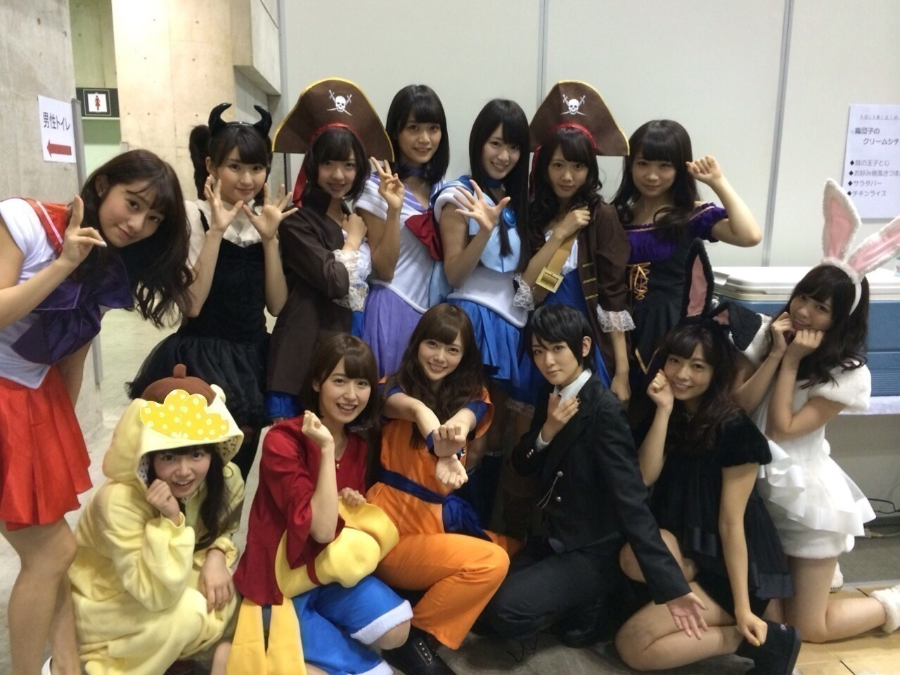
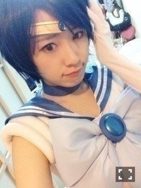

2014/1018Sat（´-`）.｡oO(かずみ ん×311
約束通り1日2回更新しますぜ！
言葉足すと今日中には無理そうなので
ほぼ写真でっ(σ´∀｀)σ
じょーさん誕生日おめでとう！
じょーさん泣いてた(´;ω;`)
大好き！ぎゅっとしたくなる！
本当に大好き！thanks☆
今日は握手会でした！
ハロウィンの季節だったので
みんなでコスプレ♡♡

じゃん！
左から
カーキュリー(kaz→マーキュリー)
サーズ(桜井→マーズ)
ちびまな(秋元→ちびムーン)
フカーン(深川→サターン)
後ろに幼い子が...
みんな一緒に変身してくれてありがと♡
アリスにちょっと憧れるカーキュ。
ラブリーちゃん達に見惚れるカーキュ。
ちなみに
ボブのウィッグをピンで止めて
髪を短く見せてました〜(*´ω`*)ﾉ
ちなみに前回のカーキュリーは

こんな感じ。ウィッグの差かな！
普段はやっぱり
このストレートヘアーだよね。
ロングはやはり落ち着く...
今度メガネkazで握手とかも
しよかなぁ♡？笑笑
--------
きょーちゃん、りさこちゃん、
卒業おめでとう。
一緒に活動していけて嬉しかったぞ！
きょーちゃんのクレヨンしんちゃんのモノマネうまかった！プリンシパルできょーちゃんがルイーダになったの、忘れない！凄かった^^
りさこちゃんのベルの安定感、素晴らしかったです。真面目でしっかりしてる子なんかなという印象！
仕事で沢山交わる機会があったのはプリンシパルだったなぁ。
大人しい2人だったから、私から普段もお話しに行けばよかったなぁーと...こんな先輩でごめんよ>_<
乃木坂に入ってくれてありがとう！
一緒に坂を登ってくれてありがとう！
辛いこともあったと思うけど、乃木坂に入った経験を生かす場所が、この先沢山あるはず！
明るい未来を歩んでください。
今までありがとう。お疲れ様...☆
ねねちゃん、、
実感もまだ湧かないし、
文もまとまらない(´;ω;`)
また今度ゆっくり書かせてもらう。
明日のライブ、頑張ってねみんな！
頑張ってね、ねねちゃん！
握手会、来てくださったみなさん、
ありがとうございました( ∩ˇωˇ∩)
いつも本当に応援ありがとう♡♡
沢山の沢山の人に支えられてる幸せ、
ありがたさをこれからもずっと忘れません！！
高山は本当に不器用だけど、不器用な所が本当コンプレックスだけど、この感謝の気持ちがいっぱい皆さんに伝わればいいなぁ...
私は明日、
ハロウィンパーティライブに出ます！
去年も出させていただいたVAMPSさん主催のライブです！
頑張ります(｀･ω･´)b
久々ライブ気合い入れるぞ！
楽しみじゃーい！！
はっ！！
画像だけのブログにするつもりが
いつの間にかいっぱい字も書いて
しまった((((/*0*)/！
それでは、今日はこの辺で。
おやすみなさい...☆
2014/10/18 23:56


コメント(664)
かずみん
夜遅いけど、握手会お疲れ様(ノ´∀｀*)
今日はしっかり寝て、体を休めてね＼(^-^)／
一気に寒くなってきたから、体調崩さないように気をつけてね(*^^*)
いってる本人は風邪をひいてまーす(´Д`|||)
握手会だったね。
かずみん本当ごめんね本当にごめんね（ ; ; ）
マーキュリー行きたかったなぁ。。。
可愛かった（´-`）.｡oO（♡
私もヴィーナスしたいなぁ。
似合わないからやめとくね（笑）
次会えるの11月でまだ先だよーーー
なんかさみしい。。。
かずみん・・・・・本当ごめんね(°_°)
2日の握手会楽しみにしてるね♡
が面白かったよw
カーキュリー、お疲れー♪
今日も一日ありがとうございました^^
やっぱショートのかずみんは可愛い(*ﾟ▽ﾟ*)
元気&ポジティブ感がより増して可愛い！！
もし何か思い切ったイメチェンしたい時は是非！！！笑
他のセーラー戦士にも会いたかったなぁ…サターンとかサターンとか…サターンとか（´-`）.｡oO（
ソニレココンビ可愛い！
全握いくから待っててね！
覚えてくれてるかなー
やばいいいいいいいいいです！！！
こんな可愛い写真みれて、嬉しいです！！
愛してるからハロウィンライブ行く
めっちゃわちゃわちゃしとる笑
かーきゅりーかわいすぎっ\(//∇//)\
今日はありがとうね
たのしかったよヽ( ´3｀)ﾉ
1日2回もかずみんのブログ見れるとか幸せ
寧々は明日で卒業だね..
みんなかわいいなぁ〜コスプレいいねぇええ（笑）
めっちゃいきたかったわ今日（笑）
髪の毛きれーすぎ最高（笑）
カーキュリー見たかったのに〜(´°̥̥̥̥̥̥̥̥ω°̥̥̥̥̥̥̥̥｀)
12月楽しみにしてる！
すなわち
僕の幸せが1日2回訪れる
更新ありがとうございます
今日はきょうちゃん、りさこさんに
そして寧々ちゃんの卒業セレモニーでしたね
明日で寧々ちゃんは乃木坂46卒業してしまいますが
卒業後も仲良くしてください^_^
明日は寧々ちゃんにとって最高の公演になりますように。
そして一実さん今日はお疲れ様でした
こうへい
11/2の握手会も行くから！
かずみんぺろぺろ！
そしてロングのストレートかずみん本当
似合ってて可愛すぎます( ; _ ; )/~~~♡♡♡
メガネのかずみんもいいな〜( ∩ˇωˇ∩)♡♡
ひらみゆ
セーラームーン見たことないけどたぶん本家の可愛さより超えてると思う（笑）
コスプレ最高〜♡♡
みんな可愛すぎる… (´θωθ｀)
かずみん今日の握手めっちゃたのしかったよ＼(^o^)／
5部までいたかった(._.)
高山LOVEアメイジング＼(^o^)／
握手会お疲れ様でした！
カーキュリー見たかったですが、今日は都合で行けませんでした（泣）
今度の握手会は参加しますので、またかずみんのところ行きます！
それでは。
奇跡的に今日2回ともはやめに気づけたw
握手会おつかれさま♡
カーキュリーうわあああ来年の春以降またやってほしいなぁ(>_<)♡♡受験終わったら個握またいきます(^^)また一から打ち解けていきたい！
ブログ更新ありがとう(=´∀｀)人(´∀｀=)
かずみん1日2回もありがとう(=´∀｀)人(´∀｀=)
握手会お疲れ様です
カーキュリーやっぱりかわいいですね、！
羨ましい
みんな着てたのか！！！行きたかったなあ…
アリス絶対にあうよ！今度やって見て！！笑
握手会お疲れ様でした！
ブログ１日２回更新お疲れ様でした！
個人的に、フカーンに爆笑してしまいました。原型全くないっていうね。フカーン。
ネーミングは良いとして、生で見たかった！！！セーラースターズ！！
ゆっくり休んで、明日に備えて下さいね。
ずっと応援しています。
眼鏡似合う〜∧( 'Θ' )∧
セーラー戦士もだけどみんなのコスプレのレベル高杉！！！
いやー…かわいい(´▽｀)
明日のライブがんばってね！
わ！セーラームーン！
みんな足綺麗すぎ！(笑)
ぬおーんみんな可愛い♡♡癒されました\( *´ω`* )/
リョースケだよ〜(￣^￣)ゞ
今日はありがとね〜(^_^)
セーラー達大集合素晴らしい！！
生で見てみたいな！！笑
んじゃまた握手会で！！
えりにゃんだよー♩
今日はいっぱいお話出来て嬉しかったよ！
みなみとの写メもさっそくありがとう♡
ハロウィンカーキュリーやるね！
今からわくわく⊂( ˆωˆ )⊃
セーラームーンのコスプレいいですねｗ
アリス軍団にちょっとだけ憧れますね
メガネ凄く似合うじゃないですか。
とっても綺麗ですよ
コメントする